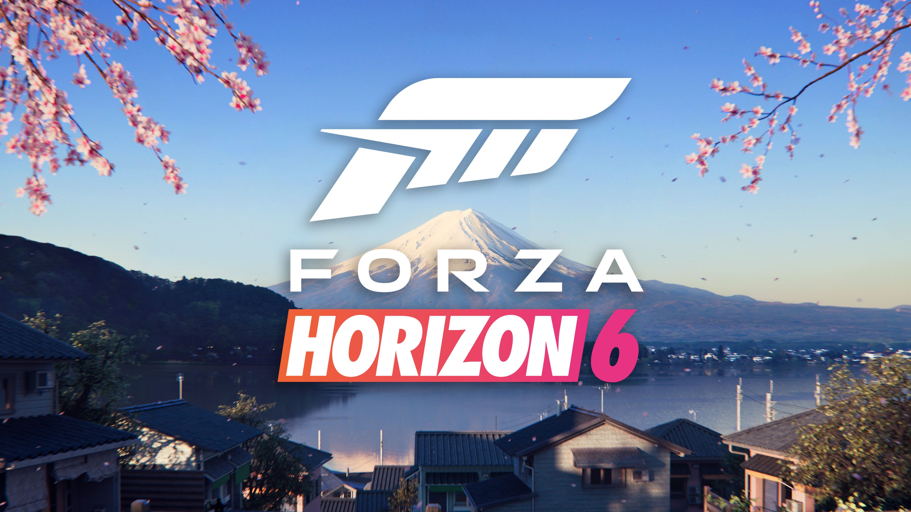

19.05.2026
Forza Horizon 6 вышла
Новая часть гоночной серии официально вышла на ПК и Xbox Series X/S. На этот раз фестиваль Horizon переехал в Японию, а карта стала самой большой за всю историю игры. Игрокам доступны ночной Токио, горные серпантины для дрифта и больше 800 машин со старта. В первые же сутки онлайн игры побил рекорды прошлых частей, хотя некоторые игроки жалуются на просадки FPS в центре города.